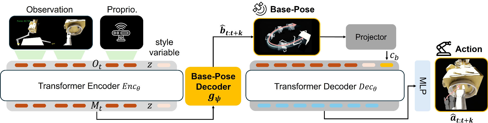

Dynamics-aware demonstrations
Execute motions in a floating-base system, align the target to the actually reached grasp pose in hindsight, and re-render the recorded trajectory. The resulting visual supervision retains execution drift.
IROS 2026 · SPACE ROBOTICS
Xi’an Jiaotong University
Learning capture motions that account for the spacecraft’s own reaction.
63.33%
Average capture success
7.8cm
Average terminal distance
+20.66pp
Success over ACT + GJM
In microgravity, arm motion moves the base too. SpacePolicy addresses this coupling in both demonstration construction and action learning, so the policy can anticipate the consequences of free-floating motion.

Execute motions in a floating-base system, align the target to the actually reached grasp pose in hindsight, and re-render the recorded trajectory. The resulting visual supervision retains execution drift.
Predict a future base-pose sequence from observation memory and project it into conditioning tokens. The action decoder uses this anticipated motion to generate joint position, velocity and gripper chunks.
A longer prediction horizon carries intent across Approach → Align → Capture, supporting smoother transitions.
The paper evaluates Aura, Dawn and Hubble in NVIDIA Isaac Sim with zero gravity. For each target, policies are trained on 300 trajectories and tested on 100 unseen capture scenarios.
| Method | AuraSR (%) ↑ | DawnSR (%) ↑ | HubbleSR (%) ↑ | AverageSR (%) ↑ | AverageDist. (cm) ↓ |
|---|---|---|---|---|---|
| ACT | 1 | 0 | 0 | 0.33 | 70.8 |
| ACT + GJM | 54 | 45 | 29 | 42.67 | 13.4 |
| DP + GJM | 45 | 36 | 26 | 35.67 | 15.4 |
| SpacePolicy Direct execution | 68 | 67 | 55 | 63.33 | 7.8 |
SR: successful physical capture by the end of a rollout. Dist.: terminal distance to the nearest docking-ring surface for unsuccessful episodes. Averages are across the three targets. GJM: generalized Jacobian compensation.
Increasing the horizon from 20 to 100 steps raises success from 54.67% to 59.67%. Adding future-base prediction and physics-conditioning reaches 63.33%, with terminal distance reduced from 9.8 to 7.8 cm.
Results and method descriptions on this page are reported in the published paper. They are not new benchmark runs of the released code. See implementation notes for the release scope.
@inproceedings{han2026spacepolicy,
author = {Han, Bing and Hu, Xing and Wang, Bingquan and Zhan, Runzhe and
Yang, Jianing and Fu, Zhihang and Zhao, Xiangkang and
Wang, Chenxi and Zhai, Zhi and Liu, Jinxin and Chen, Xuefeng},
title = {{SpacePolicy}: Dynamics-Aware Imitation Learning for Free-Floating On-Orbit Capture},
booktitle = {2026 IEEE/RSJ International Conference on Intelligent Robots and Systems (IROS)},
year = {2026},
pages = {9912--9919},
publisher = {IEEE},
url = {https://rasevents.org/uploads/documents/pdfviewer/c1/0a/235289-1549.pdf}
}